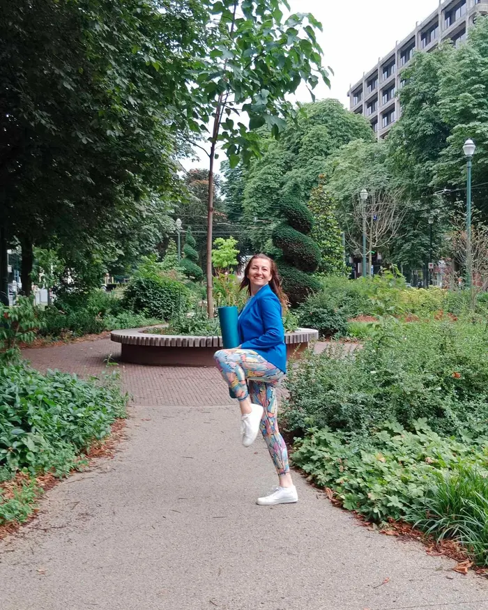

Yoga & Healthy Spine · Bruxelles

Malgorzata est diplômée de l'Académie de Psychologie Alternative.
Thérapeute-formatrice spécialisée dans la colonne vertébrale, elle enseigne le Pilates Matwork, la méthode « Colonne Vertébrale Saine », le Kiddy Yoga et le yoga de style Iyengar. Elle est également professeure de danse.
Elle est la créatrice de projets consacrés à la santé et au bien-être : Stress Off, Prévention de l'hernie discale et Bien-être.
Vendredi 19h – 20h15
Les séances peuvent inclure :
Les séances sont adaptées aux saisons et aux besoins du groupe.
Vendredi 20h30 – 21h30
Prévention des maux de dos en cas de douleurs chroniques et thérapie par le mouvement.
Samedi 9h25 – 10h25
Séance intense avec équipement, renforcement musculaire et Pilates.
Inscription et autres informations :
octavabxl@gmail.com
0484 95 90 92